This is the first year Sakuracon has had non printed badges. The line took around 45 minutes for Ryan, Slipplis, and I. It was around 15 minutes when Linus went through later. Huge improvement from the disaster last year!
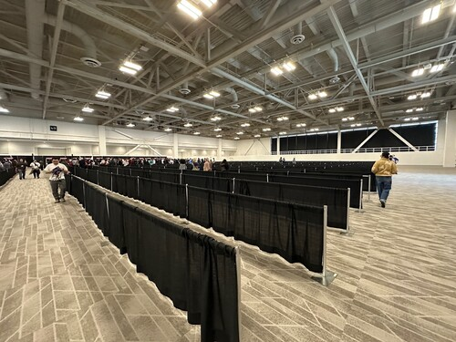
Not printing the badges on demand also means you don't get to choose a badge name. Write one in right? It's worth it though. These were a lot better.
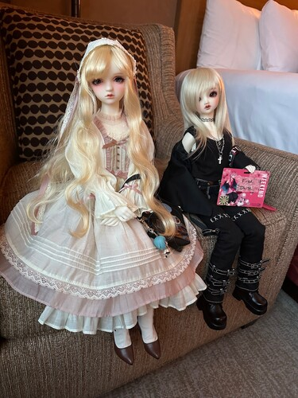
This year they had custom lanyards for the new Witch Hat Atelier anime. Once again, they offered all adults an adult wristband. This year, I only found a half of one on the ground.
2026 is the year of Himmel the Hero! I spotted lots of Himmel cosplayers and Himmel fan art. Our hero will forever remain in our hearts~
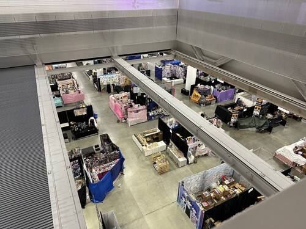
There were a lot of artists in the Dealer's Hall this year. It was really shocking! I noticed one artist booth in the Dealer's Hall had 4 different artists. According to the application page, Sakuracon has a cost of $500 for an AA booth, with a limit of one artist. The cost of a Dealer's Hall booth is $1500 to $2200. There's no artist limit for these booths. I can see how this would work out better if correctly organized.
Copic had a booth in the Dealer's Hall. I was informed they refill your dry markers for FREE at conventions. I wish I knew this when I was packing. Next time! Linus wanted to sit down at the booth and draw so I was up for that. The supplies at the table included multiliners, Acrea, and sketch. They did not bring any pencils for us! One of the guys at the booth was awesome and brought me a beautiful metal kurutoga to use. Unfortunately I found myself with no eraser... I did my best to make a beautiful Mizuki with what I had. Linus tried drawing Ator's monkey from memory and then tried again from reference.
I asked about dip pen inks that work well with Copic and after some discussions between booth staff, I was told there are no great dip pen inks for Copic and that's why multiliner was created.
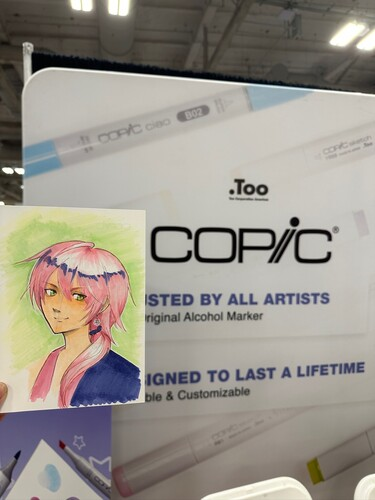
I tried using the Acrea markers but I could NOT get them to cooperate. I asked for help and they still wouldn't cooperate. I think acrylic markers just aren't for me. They had Easter eggs on the table that you could take if you decorate. I had a lot of trouble decorating mine because of my incompatibility with Acrea. Inside were color code pins. One of the booth staff members liked my Mizuki so much he gave me a Copic lanyard!
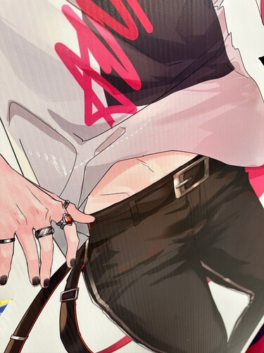
The fashion guest this year was Moriguchika. Her designs were inspired by traditional Japanese clothing and were beautiful! My only issue with them was the quality of the fabric used. I was really bummed to see it.
At the end of her table, I noticed there was a collection of prize figures... That seems a bit like... Could our friend h.naoto-san be here as well?? Sure enough, he was! We walked over and greeted him! I gave him my card and he was very confused what a "nekocomiccon" was. Linus had handwritten unique love letters on the back of each of his business cards so I hope the machine translation will convey his love to the business card receiver. We bought enough to cover a VIP badge ($300 for reference) for the event on Saturday.
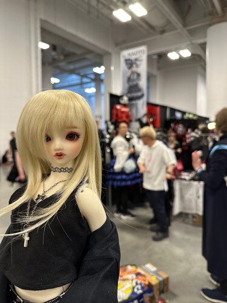
New update: h.naoto has a new line called "chuuni" which is only being sold in the US. It's pretty fun and definitely not very punk or goth.
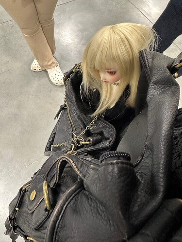
The game section of the VIP event was a little easier this year. In previous years, he's had us guess the answers to his deep h.naoto lore questions. That doesn't usually go well. This year, he let us do multiple choice. Whoever got to 5 correct answers first would win! Miraculously, it was me who guessed 5 correctly first. I missed one question, but the entire group also missed this question. We must not follow his twitter announcements close enough! He posted a photo of the event participants on twitter as well as a photo of Hina that we took after the event. I offered him an artist trading card and he took a very pink and cute Hina!
In the past, the AA has had a few riso prints, but there were a TON of artists with riso prints this con. It's the new big trend!
Linus wanted to do something we had never done before. We joined the Black Butler stamp rally! Here are the items he purchased.
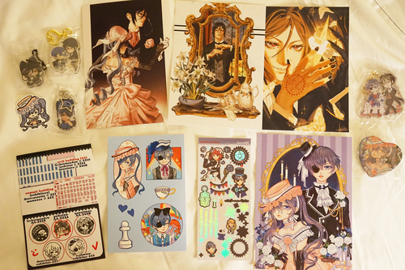
And here are the items he received!
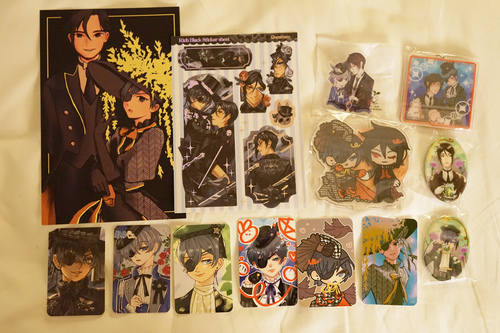
The participating artists were lycheemeadow, pebotsu, questneo, deercassette, mauwsee.
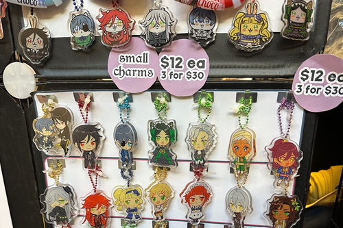
The hunt was pretty fun. One of the artists (mauwsee) had a Prince Soma keychain too! I took the neko Sebastian from the haul. Really is there any point in making any of the other characters a catboy?? Sebastian is it!!
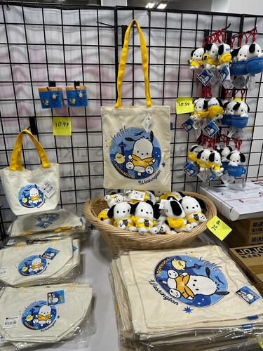
If you were unaware, Sanrio did a Texas themed set of Hello Kitty and Gudetama a few years back that were sold at Kinokuniya. 2026 is finally the year. Kinokuniya had a Pochaco x Seattle collab!
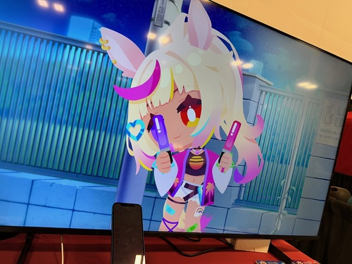
Office Expo had a "try it yourself" vtuber set up. I think I'm gonna need one of these bad boys. Remember those animoji stickers Apple released a few years ago? It's fun like that.
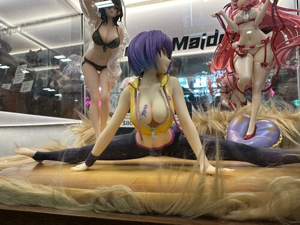
Here's a list of artists I found interesting in the AA:
Cute chibi style~
Bishounen enthusiast. She had a print of her character eating a burger and I would like to know more.
It took me a particularly long time to realize her username is nacho2arts. She had a 2 stamp set up to make her business card!! It was awesome!! I thought her shirt designs were very cute.
This should be printed as a sticker sheet!!! HELLO??? A rare 2 artist AA booth. They had small printed zines for free to learn about their characters.
She's got a number of BL comics that are currently being translated into English. Pretty wild stuff but she's passionate about it.
If you're not a fujoshi, you should check these Nostalgic Dog Phone Charms out. If you are....
This artist had the ONLY Haruhi in the AA. Forget Yuki Nagato! We were blessed to find Haruhi at all! She also had K-on, Nichijou, and Azumanga Daioh!
I don't buy fan merch, but she is THIS CLOSE to getting me to buy Black Butler fan merch.
I love the new mascot Mizuki, so we went to check out his official merch. It was so disappointing. The print quality of the shirts was awful.
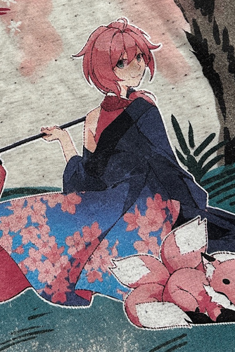
The happi had a fine quality Mizuki print put against a horribly artifacted background!
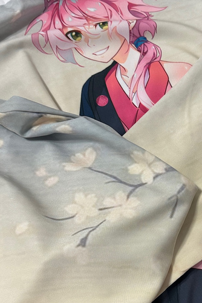
What did my boy do to deserve this???
The AA elevators were open into the building on the Cheesecake factory block. I went down them to check if the had more AA down there, but it was table top gaming. At least it was a faster way to get into the AA than going all the way around.
There were a couple vendors out on the sidewalk outside of the convention centers. There's usually food sellers but I've never seen item sellers out there before.
The doll meetup this year was pretty good. We had about 7 attendees. Raedesu was the organizer again. We met on the 5th floor of the Summit building but there were not many available chairs. We packed up and moved to another area.

Before the move to the other seating area.

Raedesu had just recieved her new Peakswood girl!

The Volks turn out was very good with 4 Volks dolls.

This is topazrain's fresh new sunlight F-01 girl, Momoki, and her YoSD Sara, Moriko~
For some reason, there was a woman sleeping on the bench next to ours holding a small child. Another woman told us to be quiet because we woke her up. Strange people are afoot out there, my dudes.
I had to run off at the one hour mark to the h.naoto VIP event. I was having a good time chatting too!
There was a vinyl doll panel, but I didn't attend.
There were 2 sketchbook swap panels this year along with another FF14 art party! I ended up skipping the first sketchbook swap. I think we just had something we wanted to do more at the time, possibly eating A5 wagyu with MVB. A5 is the size of the beef, btw.
On Saturday, I walked into the OC sketchbook swap about 10 minutes late. The room was PACKED. There were people sitting on the floor. Quiet and relaxing music was playing. No chatting. I decided to leave and text and warn the crew (also late) that this was a bust! I walked next door to the open art room and started chatting with someone at the decoden table. After everyone arrived, we moved over to the coloring table and had our own sketchbook swap.
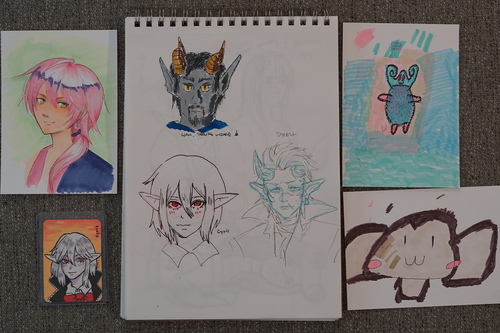
My Mizuki from the copic booth, an ATC from Eike (traded for Volta), sketches from leto_atreides, Eike, and tae, and 2 drawings of Ator's monkey by Linus (one of dubious likeness).
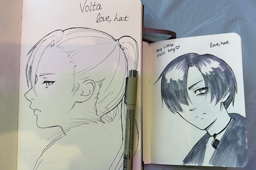
Here are my drawings in Eike and leto_atreides's sketchbooks. Tae was timing us, but I don't know the time limit and the time kept extending 30 more seconds.
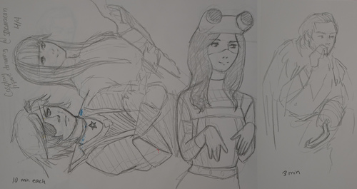
We went to the cosplay figure drawing panel on Saturday evening. I was sitting closer to the back so I couldn't see the whole figure unfortunately. It looked really hard to just stand there and hold a pose for 10 minutes! Thank you, models!
The FF14 Art Party was scheduled for the last 2 hours of the con. We arrived for the last 45 minutes or so and the room was NOT poppin. The con had given them a room with no desks.
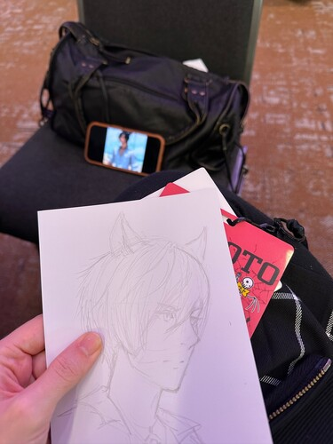
I learned from last year to bring my own drawing tools, but I didn't bring my sketchbook to use as a hard surface! I ended up using my h.naoto VIP badge as my hard surface to draw against. Linus was stuck with his regular sized Sakuracon badge!
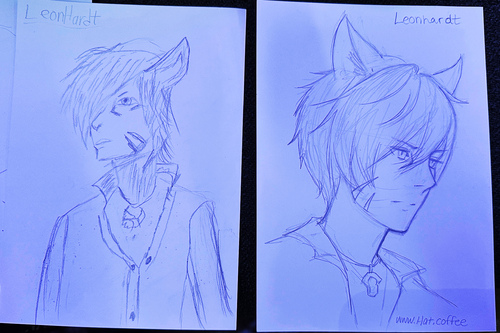
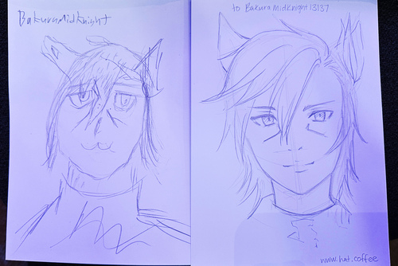
They did hear the voice of The People (me) and brought erasers this con! Having no desk was worse than having no chair though.
I overheard the panelists say that someone had drawn and left a catboy Naruto in the past. I hope they didn't mean my catboy gamer "MINECRAFT" that I left at Kumoricon... Someone already took him home right??
Linus and I got up early to make it to Maullar's panel. It was nearly the same as the Kumoricon version, but I didn't get to see him the rest of the time at the con!
I really wanted to check out the pin trading panel! I went into my room at home and dug up every pin I hated and dragged them all the way to the con. It turns out these people are SERIOUS about pin collecting and I truly had a bunch of JUNK!!!!
I found someone with a bunch of Enstars pins and a Hina size Miku journal keychain. I tried to trade but I was told to just take the pins I wanted ;u; Thank you!!!
Another trader had a bunch of Kyou x Tohru enamel pins and she just gave them to me!! KYaaaaaAAAa
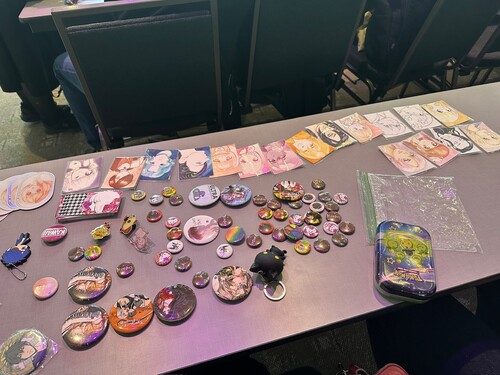
I set up shop at a table after viewing all the other options. I decided to put out my stickers and ATCs along with my garbage pins.
Another trader really liked my Grassy with Carrot and traded 2 enamel pins of unknown characters for it. She said she was going to give it to her husband!
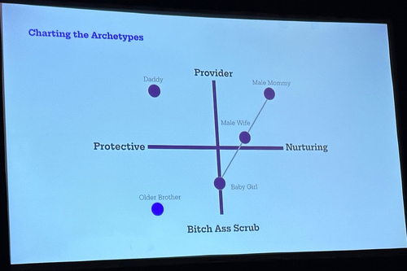
Linus and I wandered into a panel called "Hot Anime Boys in your Area" and it was exactly the trick you'd expect me to fall for. The panelists discussed anime "daddies" and "male mommies" and y'know honestly I don't know what I was doing there.
We attended none and fell asleep at midnight.
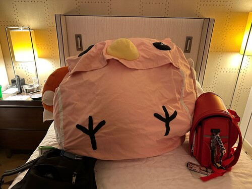
I did go to karaoke at the Rockbox with tae and co on Day 0 and took this cool photo!
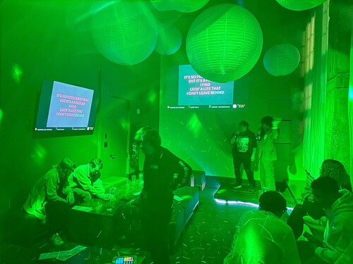
I didn't spend any time in the Sheraton lobby this year. I felt like I really missed out on it but I was so sleepy ;_; The woes of waking up at 7:30. I'm a neet too this isn't fair!!! I don't want to wake up this early!
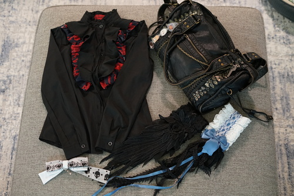
My prize from the VIP event! It's pleather so I'll use it as much as I can before it turns into dust. It looks like it might be a B-grade, but a B-grade is a perfect gift item.
I have no idea how to work this one into an outfit but it was my favorite one there. I'll figure something out.
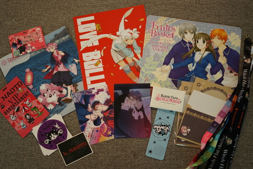
Yen press released a massive box set of Furuba recently! It only costs... $240?!? Well, I got 3 copies of the advertisment poster and I'll wait for the sale.
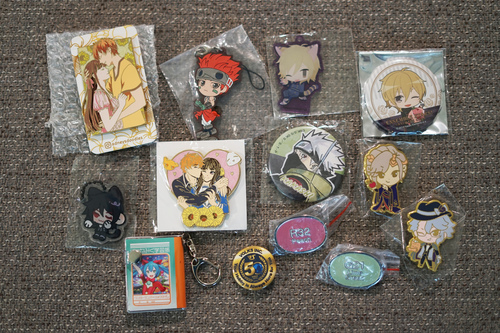
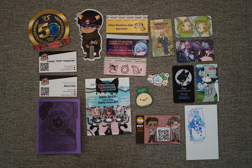
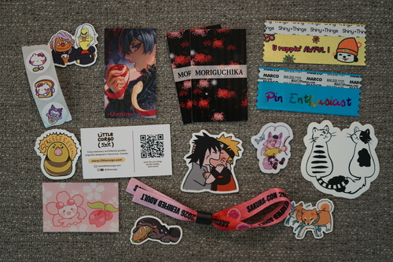
I'm particularly good at collecting free items. The Volks 50th Anniversary pin and sticker were gifts from Topazrain! Thank you again :3
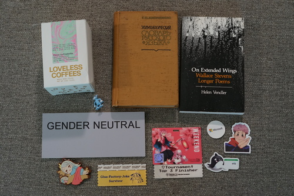
Ryan's haul.
On Thursday night, back at the hotel room, Linus took a bite of his chocolate croissant procured from La Panier. The next morning, it was nowhere to be found.
No evidence was left behind. We searched the entire room. The paper bag was gone too! Is Teezan to blame?
Our second mystery for this year is the name of the designer of Mizuki. I have sent an email and hope to be able to tell the world who designed this beautiful boy.
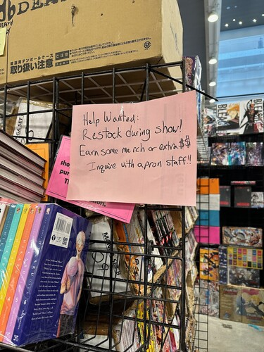
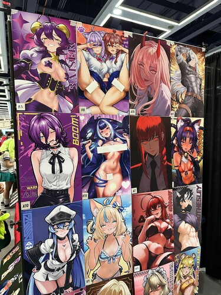
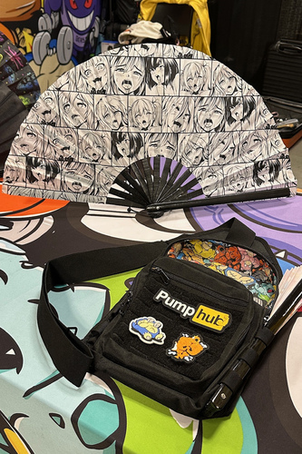
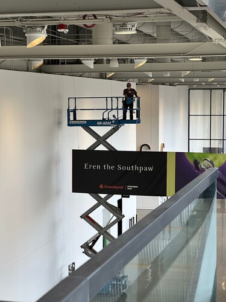